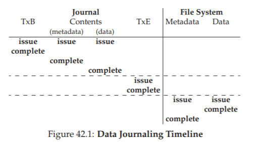
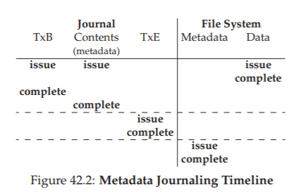

42. Tính nhất quán khi xảy ra sự cố (Crash Consistency): FSCK và Journaling
Như chúng ta đã thấy cho đến thời điểm này, file system (hệ thống tệp) quản lý một tập hợp các cấu trúc dữ liệu (data structure) để hiện thực hóa các trừu tượng (abstraction) mà chúng ta mong đợi: file (tệp), directory (thư mục), và tất cả các metadata (siêu dữ liệu) khác cần thiết để hỗ trợ trừu tượng cơ bản này. Không giống như hầu hết các cấu trúc dữ liệu (ví dụ: những cấu trúc tồn tại trong bộ nhớ của một chương trình đang chạy), các cấu trúc dữ liệu của file system phải tồn tại lâu dài (persist), nghĩa là chúng phải được lưu trữ trên các thiết bị có khả năng giữ dữ liệu ngay cả khi mất điện (chẳng hạn như ổ cứng từ hoặc SSD dùng bộ nhớ flash).
Một thách thức lớn mà file system phải đối mặt là làm thế nào để cập nhật các cấu trúc dữ liệu persistent (lưu trữ lâu dài) ngay cả khi có khả năng xảy ra mất điện hoặc system crash (hệ thống bị sập). Cụ thể, điều gì sẽ xảy ra nếu ngay giữa quá trình cập nhật các cấu trúc trên đĩa (on-disk structures), ai đó vô tình rút dây nguồn và máy mất điện? Hoặc hệ điều hành gặp lỗi và bị crash? Do khả năng mất điện hoặc crash, việc cập nhật một cấu trúc dữ liệu persistent trở nên khá phức tạp, và dẫn đến một vấn đề mới, thú vị trong việc hiện thực file system, được gọi là crash-consistency problem (vấn đề đảm bảo tính nhất quán khi xảy ra sự cố).
Vấn đề này khá dễ hiểu. Hãy tưởng tượng bạn cần cập nhật hai cấu trúc trên đĩa, A và B, để hoàn tất một thao tác cụ thể. Vì đĩa chỉ xử lý một yêu cầu tại một thời điểm, một trong hai yêu cầu này sẽ được ghi xuống đĩa trước (hoặc A hoặc B). Nếu hệ thống bị crash hoặc mất điện sau khi một thao tác ghi hoàn tất, cấu trúc trên đĩa sẽ rơi vào trạng thái không nhất quán. Và như vậy, chúng ta có một vấn đề mà mọi file system đều phải giải quyết:
THE CRUX: LÀM THẾ NÀO ĐỂ CẬP NHẬT ĐĨA NGAY CẢ KHI XẢY RA SỰ CỐ Hệ thống có thể bị crash hoặc mất điện giữa hai thao tác ghi bất kỳ, và do đó trạng thái trên đĩa có thể chỉ được cập nhật một phần. Sau khi crash, hệ thống khởi động lại và muốn mount (gắn) file system một lần nữa (để truy cập các file, v.v.). Vì crash có thể xảy ra tại bất kỳ thời điểm nào, làm thế nào để đảm bảo file system giữ được hình ảnh (image) trên đĩa ở trạng thái hợp lý?
Trong chương này, chúng ta sẽ mô tả vấn đề này chi tiết hơn, và xem xét một số phương pháp mà các file system đã sử dụng để khắc phục. Chúng ta sẽ bắt đầu bằng cách xem xét phương pháp được sử dụng trong các file system cũ, được gọi là fsck hay file system checker (trình kiểm tra hệ thống tệp). Sau đó, chúng ta sẽ chuyển sang một phương pháp khác, được gọi là journaling (còn được biết đến với tên write-ahead logging), một kỹ thuật bổ sung một chút chi phí (overhead) cho mỗi thao tác ghi nhưng có khả năng phục hồi nhanh hơn sau khi crash hoặc mất điện. Chúng ta sẽ thảo luận về cơ chế cơ bản của journaling, bao gồm một số biến thể mà Linux ext3 [T98, PAA05] (một file system journaling tương đối hiện đại) triển khai.
42.1 Một ví dụ chi tiết
Để bắt đầu việc tìm hiểu journaling, hãy xem một ví dụ. Chúng ta cần một workload (khối lượng công việc) có thao tác cập nhật các cấu trúc trên đĩa. Giả sử ở đây workload rất đơn giản: thao tác append (nối thêm) một data block (khối dữ liệu) vào cuối một file đã tồn tại. Việc append này được thực hiện bằng cách mở file, gọi lseek() để di chuyển file offset (vị trí con trỏ tệp) đến cuối file, sau đó thực hiện một thao tác ghi (write) 4KB vào file trước khi đóng nó.
Giả sử thêm rằng chúng ta đang sử dụng các cấu trúc file system đơn giản tiêu chuẩn trên đĩa, tương tự như các file system mà chúng ta đã thấy trước đây. Ví dụ nhỏ này bao gồm một inode bitmap (bản đồ bit của inode, với chỉ 8 bit, mỗi bit ứng với một inode), một data bitmap (bản đồ bit dữ liệu, cũng 8 bit, mỗi bit ứng với một data block), các inode (tổng cộng 8, đánh số từ 0 đến 7, phân bố trên bốn block), và các data block (tổng cộng 8, đánh số từ 0 đến 7). Dưới đây là sơ đồ của file system này:
...
Nếu bạn quan sát các cấu trúc trong hình, bạn sẽ thấy rằng chỉ có một inode được cấp phát (inode số 2), được đánh dấu trong inode bitmap, và một data block được cấp phát (data block số 4), cũng được đánh dấu trong data bitmap. Inode này được ký hiệu là I[v1], vì đây là phiên bản đầu tiên của inode này; nó sẽ sớm được cập nhật (do workload đã mô tả ở trên).
Hãy cùng xem bên trong inode đơn giản này. Bên trong I[v1], chúng ta thấy:
...
Trong inode (chỉ mục nút) đơn giản này, kích thước của file là 1 (nghĩa là nó có một block đã được cấp phát), con trỏ trực tiếp (direct pointer) đầu tiên trỏ tới block 4 (block dữ liệu đầu tiên của file, ký hiệu Da), và cả ba con trỏ trực tiếp còn lại đều được đặt là null (biểu thị rằng chúng không được sử dụng). Tất nhiên, inode thực tế có nhiều trường (field) hơn rất nhiều; hãy xem lại các chương trước để biết thêm thông tin.
Khi chúng ta thực hiện thao tác append (nối thêm) vào file, tức là đang thêm một data block (khối dữ liệu) mới vào nó, khi đó cần phải cập nhật ba cấu trúc trên đĩa (on-disk structures): inode (phải trỏ tới block mới và ghi nhận kích thước mới lớn hơn do thao tác append), data block mới Db, và một phiên bản mới của data bitmap (gọi là B[v2]) để biểu thị rằng data block mới đã được cấp phát.
Như vậy, trong bộ nhớ của hệ thống, chúng ta có ba block cần phải ghi xuống đĩa. Inode đã được cập nhật (inode phiên bản 2, viết tắt là I[v2]) hiện trông như sau:
...
Data bitmap đã được cập nhật (B[v2]) hiện có dạng: 00001100. Cuối cùng là data block (Db), chứa bất kỳ dữ liệu nào mà người dùng ghi vào file. Có thể là… nhạc vi phạm bản quyền chẳng hạn?
Điều chúng ta mong muốn là hình ảnh cuối cùng của file system trên đĩa sẽ trông như sau:
...
Để đạt được sự chuyển đổi này, file system phải thực hiện ba thao tác ghi riêng biệt xuống đĩa, mỗi thao tác cho một thành phần: inode (I[v2]), bitmap (B[v2]) và data block (Db). Lưu ý rằng các thao tác ghi này thường không diễn ra ngay lập tức khi người dùng gọi system call write(); thay vào đó, inode, bitmap và dữ liệu mới (ở trạng thái “bẩn” – dirty) sẽ nằm trong bộ nhớ chính (trong page cache hoặc buffer cache) một thời gian; sau đó, khi file system quyết định ghi chúng xuống đĩa (ví dụ sau 5 giây hoặc 30 giây), nó sẽ gửi các yêu cầu ghi tương ứng tới đĩa. Thật không may, một sự cố crash có thể xảy ra và làm gián đoạn quá trình cập nhật này. Đặc biệt, nếu crash xảy ra sau khi một hoặc hai thao tác ghi đã hoàn tất nhưng chưa phải cả ba, file system có thể rơi vào trạng thái “kỳ quặc” (không nhất quán).
Các kịch bản crash (Crash Scenarios)
Để hiểu rõ hơn vấn đề, hãy xem một số ví dụ về kịch bản crash. Giả sử chỉ có một thao tác ghi thành công; khi đó sẽ có ba khả năng xảy ra như sau:
Trường hợp thứ nhất, chỉ có data block (Db) được ghi xuống đĩa. Trong tình huống này, dữ liệu đã nằm trên đĩa, nhưng không có inode nào trỏ tới nó và cũng không có bitmap nào cho biết block đó đã được cấp phát. Do đó, về bản chất, thao tác ghi này coi như chưa từng xảy ra. Trường hợp này hoàn toàn không gây vấn đề gì xét từ góc độ crash consistency (tính nhất quán khi xảy ra sự cố) của file system^[1].
Trường hợp thứ hai, chỉ có inode đã được cập nhật (I[v2]) được ghi xuống đĩa. Khi đó, inode trỏ tới địa chỉ đĩa (5) – nơi mà Db đáng lẽ sẽ được ghi vào – nhưng Db vẫn chưa được ghi ở đó. Vì vậy, nếu tin vào con trỏ này, chúng ta sẽ đọc phải dữ liệu rác (garbage data) từ đĩa (nội dung cũ của địa chỉ đĩa 5). Hơn nữa, xuất hiện một vấn đề mới gọi là file-system inconsistency (sự không nhất quán của hệ thống tệp). Bitmap trên đĩa cho biết data block 5 chưa được cấp phát, nhưng inode lại nói rằng nó đã được cấp phát. Sự mâu thuẫn giữa bitmap và inode này là một dạng không nhất quán trong cấu trúc dữ liệu của file system; để sử dụng file system, chúng ta phải tìm cách giải quyết vấn đề này (sẽ bàn thêm ở phần sau).
Trường hợp thứ ba, chỉ có bitmap đã được cập nhật (B[v2]) được ghi xuống đĩa. Khi đó, bitmap cho biết block 5 đã được cấp phát, nhưng không có inode nào trỏ tới nó. Do đó, file system lại rơi vào trạng thái không nhất quán; nếu không được xử lý, thao tác ghi này sẽ dẫn đến hiện tượng “rò rỉ không gian” (space leak), vì block 5 sẽ không bao giờ được sử dụng bởi file system.
Ngoài ra, còn có ba kịch bản crash khác trong quá trình cố gắng ghi ba block xuống đĩa. Trong các trường hợp này, hai thao tác ghi thành công và thao tác cuối cùng thất bại:
Trường hợp thứ nhất, inode (I[v2]) và bitmap (B[v2]) được ghi xuống đĩa, nhưng data (Db) thì không. Khi đó, metadata của file system hoàn toàn nhất quán: inode có con trỏ tới block 5, bitmap cho biết block 5 đang được sử dụng, và mọi thứ trông có vẻ ổn xét từ góc độ metadata. Nhưng vẫn có một vấn đề: block 5 lại chứa dữ liệu rác.
Trường hợp thứ hai, inode (I[v2]) và data block (Db) được ghi, nhưng bitmap (B[v2]) thì không. Khi đó, inode trỏ tới dữ liệu đúng trên đĩa, nhưng lại tồn tại sự không nhất quán giữa inode và phiên bản cũ của bitmap (B1). Do đó, một lần nữa, chúng ta cần giải quyết vấn đề này trước khi sử dụng file system.
Trường hợp thứ ba, bitmap (B[v2]) và data block (Db) được ghi, nhưng inode (I[v2]) thì không. Khi đó, lại xuất hiện sự không nhất quán giữa inode và data bitmap. Tuy block đã được ghi và bitmap cho biết nó đang được sử dụng, nhưng chúng ta không biết nó thuộc về file nào, vì không có inode nào trỏ tới file đó.
^[1]: Trong trường hợp này, dữ liệu tồn tại trên đĩa nhưng không thể truy cập được, và vì không có metadata nào tham chiếu đến nó, hệ thống coi như thao tác ghi chưa từng xảy ra.
Vấn đề Crash Consistency (Tính nhất quán khi xảy ra sự cố)
Từ các kịch bản crash (sập hệ thống) đã phân tích ở trên, hy vọng bạn có thể thấy nhiều vấn đề có thể xảy ra đối với hình ảnh (image) của file system (hệ thống tệp) trên đĩa khi gặp sự cố: chúng ta có thể gặp tình trạng inconsistency (không nhất quán) trong các cấu trúc dữ liệu của file system; có thể xảy ra space leak (rò rỉ không gian lưu trữ); có thể trả về garbage data (dữ liệu rác) cho người dùng; và nhiều vấn đề khác.
Lý tưởng nhất, chúng ta muốn chuyển file system từ một trạng thái nhất quán này (ví dụ: trước khi file được append) sang một trạng thái nhất quán khác một cách atomic (nguyên tử, tức là toàn bộ thay đổi diễn ra trọn vẹn hoặc không diễn ra gì cả) — ví dụ: sau khi inode, bitmap và data block mới đã được ghi xuống đĩa.
Thật không may, chúng ta không thể dễ dàng làm điều này vì đĩa chỉ commit (ghi xác nhận) một thao tác ghi tại một thời điểm, và crash hoặc mất điện có thể xảy ra giữa các lần cập nhật này. Chúng ta gọi vấn đề tổng quát này là crash-consistency problem (vấn đề đảm bảo tính nhất quán khi xảy ra sự cố), hoặc cũng có thể gọi là consistent-update problem (vấn đề cập nhật nhất quán).
42.2 Giải pháp số 1: Trình kiểm tra hệ thống tệp (File System Checker)
Các file system đời đầu áp dụng một cách tiếp cận đơn giản đối với crash consistency. Về cơ bản, chúng cho phép sự không nhất quán xảy ra, rồi sửa chữa sau đó (khi khởi động lại). Một ví dụ kinh điển của cách tiếp cận “lười biếng” này là công cụ fsck1.
fsck là một công cụ trong UNIX dùng để tìm ra các sự không nhất quán như vậy và sửa chữa chúng [MK96]; các hệ thống khác cũng có những công cụ tương tự để kiểm tra và sửa chữa một phân vùng đĩa.
Lưu ý rằng cách tiếp cận này không thể sửa được mọi vấn đề; ví dụ, trong trường hợp ở trên, file system có vẻ nhất quán nhưng inode lại trỏ tới dữ liệu rác. Mục tiêu thực sự duy nhất của fsck là đảm bảo metadata (siêu dữ liệu) của file system nhất quán về mặt nội bộ.
Công cụ fsck hoạt động qua một số giai đoạn, được tóm tắt trong bài báo của McKusick và Kowalski [MK96]. Nó được chạy trước khi file system được mount (gắn) và đưa vào sử dụng (fsck giả định rằng không có hoạt động file system nào khác đang diễn ra khi nó chạy); khi hoàn tất, file system trên đĩa sẽ ở trạng thái nhất quán và có thể được truy cập bởi người dùng.
Dưới đây là tóm tắt cơ bản những gì fsck thực hiện:
Superblock: fsck trước tiên kiểm tra xem superblock có hợp lý hay không, chủ yếu bằng các phép kiểm tra hợp lệ (sanity check) như đảm bảo kích thước file system lớn hơn số block đã được cấp phát. Mục tiêu của các kiểm tra này thường là phát hiện superblock nghi ngờ bị hỏng; trong trường hợp này, hệ thống (hoặc quản trị viên) có thể quyết định sử dụng một bản sao dự phòng của superblock.
Free blocks: Tiếp theo, fsck quét qua các inode, indirect block, double indirect block, v.v., để xác định block nào hiện đang được cấp phát trong file system. Thông tin này được dùng để tạo ra phiên bản chính xác của allocation bitmap (bản đồ cấp phát); do đó, nếu có sự không nhất quán giữa bitmap và inode, fsck sẽ giải quyết bằng cách tin tưởng thông tin trong inode. Cùng loại kiểm tra này cũng được áp dụng cho tất cả inode, đảm bảo rằng mọi inode đang được sử dụng đều được đánh dấu như vậy trong inode bitmap.
Inode state: Mỗi inode được kiểm tra xem có bị hỏng hoặc gặp vấn đề gì không. Ví dụ, fsck đảm bảo rằng mỗi inode đã cấp phát có trường type (loại) hợp lệ (ví dụ: regular file, directory, symbolic link, v.v.). Nếu có vấn đề với các trường của inode mà không thể dễ dàng sửa chữa, inode đó được coi là nghi ngờ và bị xóa (clear) bởi fsck; inode bitmap cũng được cập nhật tương ứng.
Inode links: fsck cũng xác minh link count (số liên kết) của mỗi inode đã cấp phát. Như bạn đã biết, link count cho biết số lượng thư mục khác nhau chứa tham chiếu (link) tới file này. Để xác minh link count, fsck quét toàn bộ cây thư mục, bắt đầu từ root directory, và tự xây dựng số đếm liên kết cho mọi file và thư mục trong file system. Nếu có sự khác biệt giữa số đếm mới tính và số đếm trong inode, cần thực hiện hành động sửa chữa, thường là cập nhật số đếm trong inode. Nếu phát hiện một inode đã cấp phát nhưng không có thư mục nào tham chiếu tới nó, inode đó sẽ được di chuyển vào thư mục lost+found.
Duplicates: fsck cũng kiểm tra các duplicate pointer (con trỏ trùng lặp), tức là trường hợp hai inode khác nhau cùng tham chiếu tới một block. Nếu một inode rõ ràng là hỏng, nó có thể bị xóa. Hoặc, block được tham chiếu có thể được sao chép, để mỗi inode có bản sao riêng như mong muốn.
Bad blocks: Trong quá trình quét danh sách tất cả con trỏ, fsck cũng kiểm tra các bad block pointer (con trỏ tới block không hợp lệ). Một con trỏ được coi là “bad” nếu nó trỏ tới một vị trí ngoài phạm vi hợp lệ, ví dụ: địa chỉ trỏ tới block lớn hơn kích thước phân vùng. Trong trường hợp này, fsck không thể làm gì thông minh hơn ngoài việc xóa (clear) con trỏ đó khỏi inode hoặc indirect block.
Directory checks: fsck không hiểu nội dung của file người dùng; tuy nhiên, thư mục chứa thông tin được định dạng đặc biệt do file system tạo ra. Do đó, fsck thực hiện các kiểm tra tính toàn vẹn bổ sung trên nội dung của mỗi thư mục, đảm bảo rằng “.” và “..” là hai mục đầu tiên, rằng mỗi inode được tham chiếu trong một mục thư mục đều đã được cấp phát, và đảm bảo rằng không có thư mục nào được liên kết nhiều hơn một lần trong toàn bộ hệ thống thư mục.
fsck là viết tắt của file system check, một tiện ích trong UNIX dùng để kiểm tra và sửa chữa sự không nhất quán của hệ thống tệp.
Như bạn có thể thấy, việc xây dựng một fsck hoạt động hiệu quả đòi hỏi kiến thức sâu rộng và chi tiết về file system (hệ thống tệp); đảm bảo rằng đoạn code như vậy hoạt động đúng trong mọi trường hợp là một thách thức không nhỏ [G+08]. Tuy nhiên, fsck (và các phương pháp tương tự) còn gặp một vấn đề lớn hơn, và có lẽ mang tính nền tảng hơn: chúng quá chậm.
Với một ổ đĩa dung lượng rất lớn, việc quét toàn bộ đĩa để tìm tất cả các block đã được cấp phát và đọc toàn bộ cây thư mục có thể mất nhiều phút, thậm chí hàng giờ. Khi dung lượng đĩa tăng và RAID trở nên phổ biến, hiệu năng của fsck trở nên không thể chấp nhận được (mặc dù đã có những cải tiến gần đây [M+13]).
Ở một góc độ cao hơn, giả định cơ bản của fsck có vẻ hơi thiếu hợp lý. Hãy xem lại ví dụ ở trên, khi chỉ có ba block được ghi xuống đĩa; thật tốn kém khi phải quét toàn bộ đĩa chỉ để sửa lỗi xảy ra trong quá trình cập nhật ba block này. Tình huống này giống như việc bạn làm rơi chìa khóa trên sàn phòng ngủ, nhưng lại bắt đầu một thuật toán tìm kiếm toàn bộ ngôi nhà, bắt đầu từ tầng hầm và đi qua từng phòng một. Cách này có thể hiệu quả, nhưng lại rất lãng phí. Vì vậy, khi dung lượng đĩa (và RAID) tăng lên, các nhà nghiên cứu và kỹ sư bắt đầu tìm kiếm những giải pháp khác.
42.3 Giải pháp số 2: Journaling (hay Write-Ahead Logging)
Có lẽ giải pháp phổ biến nhất cho vấn đề consistent update (cập nhật nhất quán) là vay mượn một ý tưởng từ lĩnh vực hệ quản trị cơ sở dữ liệu (database management systems). Ý tưởng đó, được gọi là write-ahead logging (ghi nhật ký trước), được phát minh để giải quyết chính xác loại vấn đề này. Trong file system, chúng ta thường gọi write-ahead logging là journaling vì lý do lịch sử.
File system đầu tiên áp dụng kỹ thuật này là Cedar [H87], mặc dù nhiều file system hiện đại cũng sử dụng ý tưởng này, bao gồm Linux ext3 và ext4, reiserfs, IBM’s JFS, SGI’s XFS, và Windows NTFS.
Ý tưởng cơ bản như sau: khi cập nhật đĩa, trước khi ghi đè (overwrite) các cấu trúc hiện có, trước tiên hãy ghi lại một “ghi chú” nhỏ (ở một vị trí khác trên đĩa, tại một vị trí đã biết) mô tả những gì bạn sắp làm. Việc ghi chú này chính là phần “write ahead” (ghi trước), và chúng ta ghi nó vào một cấu trúc được tổ chức dưới dạng một “log” (nhật ký); do đó có tên gọi write-ahead logging.
Bằng cách ghi chú này xuống đĩa, bạn đảm bảo rằng nếu xảy ra crash trong quá trình cập nhật (ghi đè) các cấu trúc, bạn có thể quay lại xem ghi chú đã tạo và thử lại; nhờ đó, bạn sẽ biết chính xác cần sửa cái gì (và sửa như thế nào) sau khi crash, thay vì phải quét toàn bộ đĩa. Theo thiết kế, journaling bổ sung một chút công việc trong quá trình cập nhật để giảm đáng kể khối lượng công việc cần thiết khi khôi phục.
Bây giờ, chúng ta sẽ mô tả cách Linux ext3 — một file system journaling phổ biến — tích hợp journaling vào file system. Hầu hết các cấu trúc trên đĩa của ext3 giống hệt với Linux ext2, ví dụ: đĩa được chia thành các block group, và mỗi block group chứa một inode bitmap, data bitmap, các inode, và các data block. Cấu trúc mới quan trọng là journal (nhật ký) — chiếm một phần nhỏ dung lượng trong phân vùng hoặc trên một thiết bị khác.
Do đó, một file system ext2 (không có journaling) sẽ trông như sau:
...
Giả sử journal (nhật ký) được đặt trong cùng một file system image (ảnh hệ thống tệp) — mặc dù đôi khi nó được đặt trên một thiết bị riêng biệt, hoặc như một file bên trong file system — thì một file system ext3 có journal sẽ trông như sau:
...
Sự khác biệt thực sự chỉ là sự xuất hiện của journal, và tất nhiên, cách nó được sử dụng.
Data Journaling (Ghi nhật ký dữ liệu)
Hãy xem một ví dụ đơn giản để hiểu cách data journaling hoạt động. Data journaling là một chế độ (mode) có sẵn trong file system Linux ext3, và phần lớn nội dung thảo luận ở đây dựa trên chế độ này.
Giả sử chúng ta lại có tình huống cập nhật quen thuộc, trong đó cần ghi inode (I[v2]), bitmap (B[v2]) và data block (Db) xuống đĩa. Trước khi ghi chúng vào các vị trí cuối cùng trên đĩa, chúng ta sẽ ghi chúng vào log (hay còn gọi là journal) trước. Trong log, điều này sẽ trông như sau:
...
Bạn có thể thấy chúng ta đã ghi năm block ở đây. Transaction begin (TxB) cho biết thông tin về bản cập nhật này, bao gồm thông tin về các thay đổi đang chờ áp dụng lên file system (ví dụ: địa chỉ cuối cùng của các block I[v2], B[v2] và Db), và một loại transaction identifier (TID – định danh giao dịch). Ba block ở giữa chỉ chứa nội dung chính xác của các block đó; đây được gọi là physical logging (ghi nhật ký vật lý) vì chúng ta đặt nội dung vật lý chính xác của bản cập nhật vào journal. Một ý tưởng thay thế là logical logging (ghi nhật ký logic), trong đó lưu một biểu diễn logic gọn hơn của bản cập nhật vào journal, ví dụ: “bản cập nhật này muốn append data block Db vào file X” — cách này phức tạp hơn một chút nhưng có thể tiết kiệm dung lượng trong log và có thể cải thiện hiệu năng. Block cuối cùng (TxE) là dấu hiệu kết thúc của giao dịch này, và cũng sẽ chứa TID.
Khi giao dịch này đã được ghi an toàn xuống đĩa, chúng ta sẵn sàng ghi đè các cấu trúc cũ trong file system; quá trình này được gọi là checkpointing. Như vậy, để checkpoint file system (tức là đưa nó lên trạng thái mới nhất với bản cập nhật đang chờ trong journal), chúng ta thực hiện ghi I[v2], B[v2] và Db vào các vị trí trên đĩa như đã thấy ở trên; nếu các thao tác ghi này hoàn tất thành công, chúng ta đã checkpoint thành công file system và về cơ bản là xong.
Do đó, trình tự thao tác ban đầu của chúng ta là:
- Journal write: Ghi giao dịch, bao gồm một block transaction-begin, tất cả các cập nhật dữ liệu và metadata đang chờ, và một block transaction-end, vào log; chờ cho các thao tác ghi này hoàn tất.
- Checkpoint: Ghi các cập nhật metadata và dữ liệu đang chờ vào vị trí cuối cùng trong file system.
Trong ví dụ của chúng ta, trước tiên sẽ ghi TxB, I[v2], B[v2], Db và TxE vào journal. Khi các thao tác ghi này hoàn tất, chúng ta sẽ hoàn tất bản cập nhật bằng cách checkpoint I[v2], B[v2] và Db vào các vị trí cuối cùng trên đĩa.
Mọi thứ trở nên phức tạp hơn một chút khi xảy ra crash trong quá trình ghi vào journal. Ở đây, chúng ta đang cố gắng ghi tập hợp các block trong giao dịch (ví dụ: TxB, I[v2], B[v2], Db, TxE) xuống đĩa. Một cách đơn giản là ghi từng block một, chờ mỗi block hoàn tất rồi mới ghi block tiếp theo. Tuy nhiên, cách này chậm. Lý tưởng nhất, chúng ta muốn ghi cả năm block cùng lúc, vì điều này sẽ biến năm thao tác ghi thành một thao tác ghi tuần tự duy nhất và do đó nhanh hơn.
Tuy nhiên, điều này không an toàn, vì lý do sau: với một thao tác ghi lớn như vậy, bên trong đĩa có thể thực hiện scheduling (lập lịch) và hoàn tất các phần nhỏ của thao tác ghi lớn theo bất kỳ thứ tự nào. Do đó, đĩa có thể (1) ghi TxB, I[v2], B[v2] và TxE trước, rồi chỉ sau đó (2) mới ghi Db. Thật không may, nếu đĩa mất điện giữa (1) và (2), thì những gì còn lại trên đĩa sẽ là:
...
Tại sao đây lại là vấn đề? Bởi vì giao dịch này trông giống như một giao dịch hợp lệ (nó có phần bắt đầu và kết thúc với số thứ tự khớp nhau). Hơn nữa, file system không thể nhìn vào block thứ tư và biết nó sai; xét cho cùng, đó là dữ liệu tùy ý của người dùng. Do đó, nếu hệ thống khởi động lại và chạy quá trình khôi phục, nó sẽ replay (phát lại) giao dịch này, và một cách vô tình sao chép nội dung của block rác ‘??’ vào vị trí mà Db đáng lẽ phải nằm. Điều này là xấu đối với dữ liệu người dùng bất kỳ; và còn tệ hơn nhiều nếu nó xảy ra với một phần quan trọng của file system, chẳng hạn như superblock, vì điều đó có thể khiến file system không thể mount (gắn) được.
ASIDE: OPTIMIZING LOG WRITES
Bạn có thể đã nhận thấy một điểm kém hiệu quả khi ghi vào log. Cụ thể, file system trước tiên phải ghi block transaction-begin và nội dung của giao dịch; chỉ sau khi các thao tác ghi này hoàn tất, file system mới có thể gửi block transaction-end xuống đĩa. Ảnh hưởng đến hiệu năng là rõ ràng nếu bạn hiểu cách đĩa hoạt động: thường sẽ phải chịu thêm một vòng quay đĩa (hãy thử nghĩ tại sao).Một nghiên cứu sinh cũ của chúng tôi, Vijayan Prabhakaran, đã có một ý tưởng đơn giản để khắc phục vấn đề này [P+05]. Khi ghi một giao dịch vào journal, hãy bao gồm một checksum (mã kiểm tra) của nội dung journal trong cả block bắt đầu và block kết thúc. Làm như vậy cho phép file system ghi toàn bộ giao dịch cùng lúc, mà không cần chờ đợi; nếu trong quá trình khôi phục, file system phát hiện sự không khớp giữa checksum tính toán được và checksum lưu trữ trong giao dịch, nó có thể kết luận rằng đã xảy ra crash trong khi ghi giao dịch và do đó bỏ qua bản cập nhật file system đó. Với một thay đổi nhỏ trong giao thức ghi và hệ thống khôi phục, file system có thể đạt hiệu năng tốt hơn trong trường hợp thông thường; hơn nữa, hệ thống còn đáng tin cậy hơn một chút, vì mọi lần đọc từ journal giờ đây đều được bảo vệ bởi checksum.
Sự cải tiến đơn giản này đủ hấp dẫn để thu hút sự chú ý của các nhà phát triển file system Linux, và sau đó được tích hợp vào thế hệ tiếp theo của file system Linux, gọi là (bạn đoán đúng rồi đấy!) Linux ext4. Hiện nay, nó được triển khai trên hàng triệu máy tính trên toàn thế giới, bao gồm cả nền tảng di động Android. Vì vậy, mỗi khi bạn ghi xuống đĩa trên nhiều hệ thống dựa trên Linux, một chút mã được phát triển tại Wisconsin đang giúp hệ thống của bạn nhanh hơn và đáng tin cậy hơn.
Để tránh vấn đề này, file system thực hiện ghi giao dịch theo hai bước. Đầu tiên, nó ghi tất cả các block ngoại trừ block TxE vào journal, và thực hiện các thao tác ghi này cùng lúc. Khi các thao tác ghi này hoàn tất, journal sẽ trông giống như sau (giả sử lại với workload append của chúng ta):
Khi các thao tác ghi này hoàn tất, file system (hệ thống tệp) sẽ thực hiện ghi block TxE, để lại journal (nhật ký) ở trạng thái cuối cùng và an toàn:
...
Một khía cạnh quan trọng của quá trình này là bảo đảm tính nguyên tử (atomicity) do đĩa cung cấp. Thực tế, đĩa đảm bảo rằng bất kỳ thao tác ghi 512 byte nào cũng sẽ hoặc được thực hiện hoàn toàn, hoặc không thực hiện gì cả (và không bao giờ ghi một phần). Do đó, để đảm bảo việc ghi TxE là nguyên tử, ta nên thiết kế nó thành một block 512 byte duy nhất.
Vì vậy, giao thức hiện tại để cập nhật file system, với ba giai đoạn được đánh nhãn như sau:
- Journal write: Ghi nội dung của transaction (bao gồm TxB, metadata và data) vào log; chờ cho các thao tác ghi này hoàn tất.
- Journal commit: Ghi block commit của transaction (chứa TxE) vào log; chờ ghi hoàn tất; transaction được coi là đã commit.
- Checkpoint: Ghi nội dung của bản cập nhật (metadata và data) vào các vị trí cuối cùng trên đĩa.
Recovery (Khôi phục)
Bây giờ, hãy tìm hiểu cách một file system có thể sử dụng nội dung của journal để khôi phục sau khi crash (sập hệ thống). Crash có thể xảy ra ở bất kỳ thời điểm nào trong chuỗi cập nhật này.
Nếu crash xảy ra trước khi transaction được ghi an toàn vào log (tức là trước khi Bước 2 ở trên hoàn tất), thì công việc của chúng ta rất đơn giản: chỉ cần bỏ qua bản cập nhật đang chờ.
Nếu crash xảy ra sau khi transaction đã được commit vào log, nhưng trước khi checkpoint hoàn tất, file system có thể khôi phục bản cập nhật như sau: khi hệ thống khởi động, quá trình khôi phục của file system sẽ quét log và tìm các transaction đã commit xuống đĩa; các transaction này sẽ được replay (phát lại) theo thứ tự, với việc file system cố gắng ghi lại các block trong transaction vào vị trí cuối cùng trên đĩa.
Hình thức logging này là một trong những dạng đơn giản nhất, được gọi là redo logging. Bằng cách khôi phục các transaction đã commit trong journal, file system đảm bảo rằng các cấu trúc trên đĩa nhất quán, và do đó có thể tiếp tục mount (gắn) file system và sẵn sàng xử lý các yêu cầu mới.
Lưu ý rằng crash có thể xảy ra ở bất kỳ thời điểm nào trong quá trình checkpointing, ngay cả sau khi một số bản cập nhật tới vị trí cuối cùng của các block đã hoàn tất. Trong trường hợp xấu nhất, một số bản cập nhật này sẽ chỉ đơn giản được thực hiện lại trong quá trình khôi phục. Vì recovery là một hoạt động hiếm (chỉ diễn ra sau khi hệ thống bị crash bất ngờ), nên một vài thao tác ghi dư thừa không phải là vấn đề đáng lo ngại2.
Batching Log Updates (Gộp các cập nhật log)
Bạn có thể nhận thấy rằng giao thức cơ bản này có thể tạo ra rất nhiều lưu lượng ghi đĩa bổ sung. Ví dụ, hãy tưởng tượng chúng ta tạo hai file liên tiếp, gọi là file1 và file2, trong cùng một thư mục.
Để tạo một file, cần cập nhật một số cấu trúc trên đĩa, tối thiểu bao gồm: inode bitmap (để cấp phát một inode mới), inode mới tạo của file, data block của thư mục cha chứa entry thư mục mới, và inode của thư mục cha (lúc này có thời gian sửa đổi mới).
Với journaling, về mặt logic, chúng ta commit tất cả thông tin này vào journal cho mỗi lần tạo file. Vì các file nằm trong cùng một thư mục, và giả sử chúng thậm chí có inode nằm trong cùng một inode block, điều này có nghĩa là nếu không cẩn thận, chúng ta sẽ ghi đi ghi lại cùng một block nhiều lần.
Để khắc phục vấn đề này, một số file system không commit từng bản cập nhật xuống đĩa một cách riêng lẻ (ví dụ: Linux ext3); thay vào đó, có thể buffer (đệm) tất cả các bản cập nhật vào một global transaction (giao dịch toàn cục).
Trong ví dụ trên, khi hai file được tạo, file system chỉ đánh dấu inode bitmap trong bộ nhớ, inode của các file, dữ liệu thư mục và inode của thư mục là dirty (bẩn – cần ghi lại), và thêm chúng vào danh sách các block tạo thành transaction hiện tại. Khi đến thời điểm ghi các block này xuống đĩa (ví dụ: sau một timeout 5 giây), transaction toàn cục này sẽ được commit, chứa tất cả các bản cập nhật đã mô tả ở trên.
Nhờ việc buffer các bản cập nhật, file system có thể tránh được tình trạng lưu lượng ghi đĩa quá mức trong nhiều trường hợp.
Trong thực tế, việc ghi lặp lại một số block trong quá trình khôi phục không gây ảnh hưởng nghiêm trọng, vì đây là thao tác hiếm khi xảy ra và chỉ diễn ra sau sự cố hệ thống.
Giới hạn kích thước của Log (Making The Log Finite)
Như vậy, chúng ta đã xây dựng được một giao thức cơ bản để cập nhật các cấu trúc của file system (hệ thống tệp) trên đĩa. File system sẽ buffer (đệm) các bản cập nhật trong bộ nhớ một thời gian; khi đến lúc cần ghi xuống đĩa, file system trước tiên sẽ cẩn thận ghi chi tiết của transaction (giao dịch) vào journal (hay còn gọi là write-ahead log – nhật ký ghi trước); sau khi transaction hoàn tất, file system sẽ checkpoint các block đó tới vị trí cuối cùng của chúng trên đĩa.
Tuy nhiên, log có kích thước hữu hạn. Nếu chúng ta tiếp tục thêm transaction vào đó (như trong hình minh họa), nó sẽ sớm đầy. Bạn nghĩ chuyện gì sẽ xảy ra khi đó?
...
Khi log đầy, sẽ phát sinh hai vấn đề. Vấn đề đầu tiên đơn giản hơn nhưng ít nghiêm trọng hơn: log càng lớn thì thời gian recovery (khôi phục) càng lâu, vì quá trình khôi phục phải replay (phát lại) tất cả các transaction trong log (theo thứ tự) để phục hồi. Vấn đề thứ hai nghiêm trọng hơn: khi log đầy (hoặc gần đầy), không thể commit thêm transaction mới xuống đĩa, khiến file system trở nên “kém hữu dụng” (thực chất là vô dụng).
Để giải quyết các vấn đề này, các file system dùng journaling sẽ coi log như một cấu trúc dữ liệu vòng tròn (circular data structure), tái sử dụng nó nhiều lần; đây là lý do journal đôi khi được gọi là circular log (nhật ký vòng tròn). Để làm được điều này, file system phải thực hiện một số hành động sau một thời gian kể từ khi checkpoint. Cụ thể, khi một transaction đã được checkpoint, file system nên giải phóng không gian mà nó chiếm trong journal, cho phép log được tái sử dụng. Có nhiều cách để đạt được điều này; ví dụ, bạn có thể đơn giản đánh dấu transaction cũ nhất và mới nhất chưa được checkpoint trong log, thông tin này được lưu trong journal superblock; tất cả không gian còn lại được coi là trống. Dưới đây là minh họa:
...
Trong journal superblock (không nên nhầm với main file system superblock), hệ thống journaling ghi lại đủ thông tin để biết transaction nào chưa được checkpoint, từ đó vừa rút ngắn thời gian recovery, vừa cho phép tái sử dụng log theo cách vòng tròn. Và như vậy, chúng ta bổ sung thêm một bước nữa vào giao thức cơ bản:
- Journal write: Ghi nội dung của transaction (bao gồm TxB và nội dung bản cập nhật) vào log; chờ cho các thao tác ghi này hoàn tất.
- Journal commit: Ghi block commit của transaction (chứa TxE) vào log; chờ ghi hoàn tất; transaction được coi là đã commit.
- Checkpoint: Ghi nội dung của bản cập nhật vào vị trí cuối cùng trong file system.
- Free: Sau một thời gian, đánh dấu transaction là đã giải phóng trong journal bằng cách cập nhật journal superblock.
Như vậy, chúng ta đã có giao thức data journaling cuối cùng. Nhưng vẫn còn một vấn đề: chúng ta đang ghi mỗi data block xuống đĩa hai lần, đây là một chi phí lớn, đặc biệt đối với một sự kiện hiếm như system crash (sập hệ thống). Bạn có thể nghĩ ra cách nào để vẫn đảm bảo tính nhất quán mà không cần ghi dữ liệu hai lần không?
Metadata Journaling (Ghi nhật ký siêu dữ liệu)
Mặc dù quá trình recovery giờ đây nhanh (chỉ cần quét journal và phát lại một vài transaction thay vì quét toàn bộ đĩa), nhưng hoạt động bình thường của file system lại chậm hơn so với mong muốn. Cụ thể, với mỗi thao tác ghi xuống đĩa, chúng ta giờ đây cũng phải ghi vào journal trước, do đó gấp đôi lưu lượng ghi; sự tăng gấp đôi này đặc biệt gây ảnh hưởng trong các workload ghi tuần tự (sequential write), vốn giờ đây sẽ chỉ đạt một nửa băng thông ghi tối đa của ổ đĩa. Hơn nữa, giữa thao tác ghi vào journal và ghi vào file system chính, sẽ có một thao tác seek (di chuyển đầu đọc/ghi) tốn kém, làm tăng đáng kể overhead đối với một số workload.
Do chi phí cao của việc ghi mỗi data block xuống đĩa hai lần, người ta đã thử một số cách khác nhau để tăng tốc hiệu năng. Ví dụ, chế độ journaling mà chúng ta vừa mô tả ở trên thường được gọi là data journaling (như trong Linux ext3), vì nó ghi nhật ký toàn bộ dữ liệu người dùng (ngoài metadata của file system).
Một dạng journaling đơn giản hơn (và phổ biến hơn) đôi khi được gọi là ordered journaling (hoặc chỉ là metadata journaling), và nó gần giống như trên, ngoại trừ việc dữ liệu người dùng không được ghi vào journal. Do đó, khi thực hiện cùng một bản cập nhật như trên, thông tin sau sẽ được ghi vào journal:
...
Block dữ liệu Db, vốn trước đây được ghi vào log, giờ sẽ được ghi trực tiếp vào file system chính, tránh được thao tác ghi bổ sung; xét rằng phần lớn lưu lượng I/O tới đĩa là dữ liệu, việc không ghi dữ liệu hai lần sẽ giảm đáng kể tải I/O của journaling. Tuy nhiên, sự thay đổi này đặt ra một câu hỏi thú vị: khi nào chúng ta nên ghi các data block xuống đĩa?
Hãy cùng xem lại ví dụ append (nối thêm) vào một file để hiểu rõ hơn vấn đề. Bản cập nhật bao gồm ba block: I[v2], B[v2], và Db. Hai block đầu đều là metadata và sẽ được ghi vào log rồi checkpoint; block cuối cùng chỉ được ghi một lần vào file system. Vậy chúng ta nên ghi Db xuống đĩa khi nào? Điều này có quan trọng không?
Thực tế, thứ tự ghi dữ liệu có quan trọng đối với metadata-only journaling (ghi nhật ký chỉ siêu dữ liệu). Ví dụ, điều gì sẽ xảy ra nếu chúng ta ghi Db xuống đĩa sau khi transaction (chứa I[v2] và B[v2]) hoàn tất? Cách tiếp cận này gặp một vấn đề: file system vẫn nhất quán, nhưng I[v2] có thể trỏ tới dữ liệu rác. Cụ thể, hãy xét trường hợp I[v2] và B[v2] đã được ghi, nhưng Db chưa kịp ghi xuống đĩa. Khi đó, file system sẽ cố gắng khôi phục. Vì Db không có trong log, file system sẽ phát lại (replay) các thao tác ghi I[v2] và B[v2], và tạo ra một file system nhất quán (xét từ góc độ metadata). Tuy nhiên, I[v2] sẽ trỏ tới dữ liệu rác, tức là bất cứ thứ gì đang nằm ở vị trí mà Db đáng lẽ sẽ được ghi.
Để đảm bảo tình huống này không xảy ra, một số file system (ví dụ: Linux ext3) ghi các data block (của regular file) xuống đĩa trước, rồi mới ghi metadata liên quan. Cụ thể, giao thức như sau:
- Data write: Ghi dữ liệu vào vị trí cuối cùng; chờ hoàn tất (việc chờ là tùy chọn; xem chi tiết bên dưới).
- Journal metadata write: Ghi block bắt đầu (begin block) và metadata vào log; chờ các thao tác ghi hoàn tất.
- Journal commit: Ghi block commit của transaction (chứa TxE) vào log; chờ ghi hoàn tất; transaction (bao gồm dữ liệu) được coi là đã commit.
- Checkpoint metadata: Ghi nội dung cập nhật metadata vào vị trí cuối cùng trong file system.
- Free: Sau đó, đánh dấu transaction là đã giải phóng trong journal superblock.
Bằng cách buộc ghi dữ liệu trước, file system có thể đảm bảo rằng một con trỏ sẽ không bao giờ trỏ tới dữ liệu rác. Thực tế, quy tắc “ghi đối tượng được trỏ tới trước đối tượng trỏ tới nó” là cốt lõi của crash consistency (tính nhất quán khi xảy ra sự cố), và còn được khai thác nhiều hơn nữa trong các cơ chế crash consistency khác [GP94] (xem chi tiết bên dưới).
Trong hầu hết các hệ thống, metadata journaling (tương tự ordered journaling của ext3) phổ biến hơn full data journaling. Ví dụ, Windows NTFS và SGI’s XFS đều sử dụng một dạng metadata journaling. Linux ext3 cho phép bạn chọn giữa ba chế độ: data, ordered hoặc unordered (trong unordered mode, dữ liệu có thể được ghi bất kỳ lúc nào). Tất cả các chế độ này đều giữ metadata nhất quán; điểm khác biệt nằm ở ngữ nghĩa xử lý dữ liệu.
Cuối cùng, lưu ý rằng việc buộc ghi dữ liệu hoàn tất (Bước 1) trước khi ghi vào journal (Bước 2) không bắt buộc để đảm bảo tính đúng đắn, như giao thức trên đã chỉ ra. Cụ thể, hoàn toàn có thể đồng thời ghi dữ liệu, block bắt đầu của transaction, và metadata được ghi nhật ký; yêu cầu thực sự duy nhất là Bước 1 và Bước 2 phải hoàn tất trước khi thực hiện ghi block commit của journal (Bước 3).
ASIDE: FORCING WRITES TO DISK
Để đảm bảo thứ tự giữa hai thao tác ghi đĩa, các file system hiện đại phải thực hiện một số biện pháp bổ sung. Trước đây, việc buộc thứ tự giữa hai thao tác ghi A và B rất đơn giản: chỉ cần gửi lệnh ghi A xuống đĩa, chờ đĩa gửi ngắt (interrupt) báo cho hệ điều hành khi ghi xong, rồi mới gửi lệnh ghi B.Mọi thứ trở nên phức tạp hơn do việc sử dụng ngày càng nhiều write cache (bộ đệm ghi) trong đĩa. Khi bật write buffering (đôi khi gọi là immediate reporting), đĩa sẽ thông báo cho hệ điều hành rằng thao tác ghi đã hoàn tất ngay khi dữ liệu được đưa vào bộ nhớ đệm của đĩa, chứ chưa thực sự được ghi xuống bề mặt đĩa. Nếu hệ điều hành sau đó gửi một thao tác ghi tiếp theo, không có gì đảm bảo rằng nó sẽ được ghi xuống đĩa sau các thao tác ghi trước; do đó, thứ tự giữa các thao tác ghi không được đảm bảo. Một giải pháp là tắt write buffering. Tuy nhiên, các hệ thống hiện đại thường áp dụng biện pháp bổ sung là gửi write barrier (rào chắn ghi) rõ ràng; khi một barrier hoàn tất, nó đảm bảo rằng tất cả các thao tác ghi được gửi trước barrier sẽ tới đĩa trước bất kỳ thao tác ghi nào được gửi sau barrier.
Tất cả cơ chế này đòi hỏi phải tin tưởng rất nhiều vào hoạt động chính xác của đĩa. Thật không may, các nghiên cứu gần đây cho thấy một số nhà sản xuất đĩa, nhằm cung cấp các sản phẩm “hiệu năng cao hơn”, đã cố tình bỏ qua yêu cầu write-barrier, khiến đĩa có vẻ chạy nhanh hơn nhưng tiềm ẩn nguy cơ hoạt động sai [C+13, R+11]. Như Kahan đã nói, “nhanh” gần như luôn thắng “chậm”, ngay cả khi “nhanh” là sai.
Trường hợp phức tạp: Tái sử dụng block (Tricky Case: Block Reuse)
Có một số corner case (trường hợp biên) thú vị khiến cơ chế journaling trở nên phức tạp hơn, và do đó đáng để thảo luận. Nhiều trường hợp trong số này liên quan đến việc tái sử dụng block; như Stephen Tweedie (một trong những người đóng vai trò chính trong việc phát triển ext3) đã nói:
“Phần kinh khủng nhất của toàn bộ hệ thống là gì? ... Chính là việc xóa file. Mọi thứ liên quan đến xóa đều rắc rối. Mọi thứ liên quan đến xóa... bạn sẽ gặp ác mộng về những gì xảy ra nếu các block bị xóa rồi được cấp phát lại.” [T00]
Ví dụ cụ thể mà Tweedie đưa ra như sau: giả sử bạn đang sử dụng một dạng metadata journaling (ghi nhật ký chỉ siêu dữ liệu), và do đó các data block của file không được ghi vào journal. Giả sử bạn có một thư mục tên là foo. Người dùng thêm một entry vào foo (ví dụ bằng cách tạo một file), và do thư mục được coi là metadata, nội dung của foo sẽ được ghi vào log; giả sử vị trí dữ liệu thư mục foo là block 1000. Khi đó log sẽ chứa nội dung tương tự như sau:
...
Tại thời điểm này, người dùng xóa toàn bộ nội dung trong thư mục và cả thư mục đó, giải phóng block 1000 để tái sử dụng. Cuối cùng, người dùng tạo một file mới (ví dụ bar), và file này tình cờ tái sử dụng đúng block 1000 vốn thuộc về foo. Inode của bar được commit xuống đĩa, cũng như dữ liệu của nó; tuy nhiên, do đang sử dụng metadata journaling, chỉ inode của bar được commit vào journal; dữ liệu mới ghi trong block 1000 của file bar không được ghi vào journal.
...
Bây giờ giả sử xảy ra crash và tất cả thông tin này vẫn còn trong log. Trong quá trình replay (phát lại), quá trình khôi phục sẽ đơn giản phát lại mọi thứ trong log, bao gồm cả thao tác ghi dữ liệu thư mục vào block 1000; việc phát lại này sẽ ghi đè dữ liệu người dùng của file bar hiện tại bằng nội dung thư mục cũ! Rõ ràng đây không phải là một hành động khôi phục đúng, và chắc chắn sẽ khiến người dùng bất ngờ khi đọc file bar.
Có một số giải pháp cho vấn đề này. Ví dụ, có thể không bao giờ tái sử dụng block cho đến khi thao tác xóa các block đó đã được checkpoint ra khỏi journal. Cách mà Linux ext3 thực hiện là bổ sung một loại bản ghi mới vào journal, gọi là revoke record (bản ghi thu hồi). Trong trường hợp trên, việc xóa thư mục sẽ khiến một revoke record được ghi vào journal. Khi replay journal, hệ thống sẽ quét trước để tìm các revoke record; bất kỳ dữ liệu nào đã bị revoke sẽ không bao giờ được phát lại, nhờ đó tránh được vấn đề vừa nêu.
Tổng kết về Journaling: Dòng thời gian (Wrapping Up Journaling: A Timeline)
Trước khi kết thúc phần thảo luận về journaling, chúng ta sẽ tóm tắt các giao thức đã bàn luận bằng các timeline (dòng thời gian) minh họa cho từng loại. Hình 42.1 cho thấy giao thức khi ghi nhật ký cả dữ liệu và metadata, trong khi Hình 42.2 cho thấy giao thức khi chỉ ghi nhật ký metadata.
Trong mỗi hình, thời gian tăng dần theo chiều từ trên xuống, và mỗi hàng trong hình thể hiện thời điểm logic mà một thao tác ghi có thể được phát lệnh hoặc có thể hoàn tất. Ví dụ, trong giao thức data journaling (Hình 42.1), thao tác ghi transaction begin block (TxB) và nội dung của transaction có thể được phát lệnh đồng thời, và do đó có thể hoàn tất theo bất kỳ thứ tự nào; tuy nhiên, thao tác ghi transaction end block (TxE) không được phát lệnh cho đến khi các thao tác ghi trước đó hoàn tất. Tương tự, các thao tác checkpoint ghi dữ liệu và metadata block không thể bắt đầu cho đến khi transaction end block đã được commit. Các đường gạch ngang nằm ngang thể hiện các điểm mà yêu cầu về thứ tự ghi phải được tuân thủ.

Hình 42.1: Data Journaling Timeline
Một timeline tương tự được thể hiện cho giao thức metadata journaling. Lưu ý rằng thao tác ghi dữ liệu có thể được phát lệnh đồng thời với các thao tác ghi transaction begin và nội dung của journal; tuy nhiên, nó phải được phát lệnh và hoàn tất trước khi transaction end được phát lệnh.

Hình 42.2: Metadata Journaling Timeline
Cuối cùng, lưu ý rằng thời điểm hoàn tất được đánh dấu cho mỗi thao tác ghi trong các timeline là tùy ý. Trong một hệ thống thực tế, thời gian hoàn tất được quyết định bởi I/O subsystem (hệ thống con I/O), vốn có thể sắp xếp lại thứ tự ghi để cải thiện hiệu năng. Các đảm bảo duy nhất về thứ tự mà chúng ta có là những yêu cầu bắt buộc để đảm bảo tính đúng đắn của giao thức (và được thể hiện qua các đường gạch ngang trong hình).
42.4 Giải pháp số 3: Các cách tiếp cận khác (Other Approaches)
Cho đến nay, chúng ta đã mô tả hai lựa chọn để duy trì tính nhất quán của file system metadata (siêu dữ liệu của hệ thống tệp): một cách tiếp cận “lười biếng” dựa trên fsck, và một cách tiếp cận chủ động hơn được gọi là journaling (ghi nhật ký). Tuy nhiên, đây không phải là hai cách duy nhất.
Một cách tiếp cận khác, được gọi là Soft Updates [GP94], được giới thiệu bởi Ganger và Patt. Cách tiếp cận này sắp xếp cẩn thận thứ tự của tất cả các thao tác ghi xuống file system để đảm bảo rằng các cấu trúc trên đĩa không bao giờ rơi vào trạng thái không nhất quán. Ví dụ, bằng cách ghi data block (khối dữ liệu) được tham chiếu xuống đĩa trước inode (chỉ mục nút) trỏ tới nó, chúng ta có thể đảm bảo rằng inode sẽ không bao giờ trỏ tới dữ liệu rác; các quy tắc tương tự có thể được xây dựng cho tất cả các cấu trúc của file system. Tuy nhiên, việc triển khai Soft Updates là một thách thức; trong khi lớp journaling được mô tả ở trên có thể được triển khai với kiến thức tương đối ít về cấu trúc cụ thể của file system, thì Soft Updates đòi hỏi hiểu biết chi tiết về từng cấu trúc dữ liệu của file system, và do đó làm tăng đáng kể độ phức tạp của hệ thống.
Một cách tiếp cận khác được gọi là copy-on-write (COW), và được sử dụng trong một số file system phổ biến, bao gồm ZFS của Sun [B07]. Kỹ thuật này không bao giờ ghi đè trực tiếp lên các file hoặc thư mục hiện có; thay vào đó, nó đặt các bản cập nhật mới vào các vị trí chưa được sử dụng trên đĩa. Sau khi một số bản cập nhật được hoàn tất, file system COW sẽ “lật” (flip) cấu trúc gốc của file system để bao gồm các con trỏ tới các cấu trúc mới được cập nhật. Cách làm này giúp việc duy trì tính nhất quán của file system trở nên đơn giản. Chúng ta sẽ tìm hiểu kỹ hơn về kỹ thuật này khi thảo luận về log-structured file system (LFS) trong một chương sau; LFS là một ví dụ sớm của COW.
Một cách tiếp cận khác là kỹ thuật mà chúng tôi vừa phát triển tại Wisconsin. Trong kỹ thuật này, được gọi là backpointer-based consistency (BBC – tính nhất quán dựa trên con trỏ ngược), không áp đặt thứ tự giữa các thao tác ghi. Để đạt được tính nhất quán, một back pointer (con trỏ ngược) bổ sung được thêm vào mỗi block trong hệ thống; ví dụ, mỗi data block sẽ chứa tham chiếu tới inode mà nó thuộc về. Khi truy cập một file, file system có thể xác định file đó có nhất quán hay không bằng cách kiểm tra xem forward pointer (con trỏ xuôi – ví dụ: địa chỉ trong inode hoặc direct block) có trỏ tới một block mà block đó lại tham chiếu ngược về nó hay không. Nếu có, điều đó có nghĩa là mọi thứ đã được ghi an toàn xuống đĩa và file là nhất quán; nếu không, file là không nhất quán và một lỗi sẽ được trả về. Bằng cách thêm back pointer vào file system, có thể đạt được một dạng lazy crash consistency (tính nhất quán khi xảy ra sự cố theo kiểu lười biếng) mới [C+12].
Cuối cùng, chúng tôi cũng đã nghiên cứu các kỹ thuật nhằm giảm số lần giao thức journaling phải chờ thao tác ghi đĩa hoàn tất. Kỹ thuật này, được gọi là optimistic crash consistency [C+13], phát lệnh càng nhiều thao tác ghi xuống đĩa càng tốt bằng cách sử dụng một dạng tổng quát của transaction checksum [P+05], và bao gồm một số kỹ thuật khác để phát hiện sự không nhất quán nếu chúng xảy ra. Đối với một số workload, các kỹ thuật “lạc quan” này có thể cải thiện hiệu năng lên tới một bậc độ lớn (order of magnitude). Tuy nhiên, để hoạt động thực sự hiệu quả, cần một giao diện đĩa hơi khác so với hiện tại [C+13].
42.5 Tóm tắt (Summary)
Chúng ta đã giới thiệu vấn đề crash consistency (tính nhất quán khi xảy ra sự cố), và thảo luận nhiều cách tiếp cận để giải quyết vấn đề này. Cách tiếp cận cũ hơn là xây dựng một file system checker (trình kiểm tra hệ thống tệp) hoạt động được, nhưng có khả năng quá chậm để khôi phục trên các hệ thống hiện đại. Do đó, nhiều file system hiện nay sử dụng journaling. Journaling giảm thời gian khôi phục từ O(kích-thước-ổ-đĩa) xuống O(kích-thước-log), nhờ đó tăng tốc đáng kể quá trình khôi phục sau crash và khởi động lại. Vì lý do này, nhiều file system hiện đại sử dụng journaling.
Chúng ta cũng đã thấy rằng journaling có thể tồn tại ở nhiều dạng khác nhau; dạng phổ biến nhất là ordered metadata journaling (ghi nhật ký siêu dữ liệu có thứ tự), giúp giảm lượng lưu lượng ghi vào journal trong khi vẫn duy trì các đảm bảo hợp lý về tính nhất quán cho cả metadata của file system và dữ liệu người dùng. Cuối cùng, việc cung cấp các đảm bảo mạnh mẽ đối với dữ liệu người dùng có lẽ là một trong những điều quan trọng nhất; thật thú vị là, như các nghiên cứu gần đây đã chỉ ra, lĩnh vực này vẫn đang trong quá trình hoàn thiện [P+14].